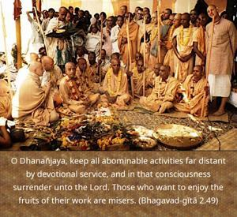

O Dhanañjaya, keep all abominable activities far distant by devotional service, and in that consciousness surrender unto the Lord. Those who want to enjoy the fruits of their work are misers.

One who has actually come to understand one’s constitutional position as an eternal servitor of the Lord gives up all engagements save working in Kṛṣṇa consciousness. As already explained, buddhi-yoga means transcendental loving service to the Lord. Such devotional service is the right course of action for the living entity. Only misers desire to enjoy the fruit of their own work just to be further entangled in material bondage. Except for work in Kṛṣṇa consciousness, all activities are abominable because they continually bind the worker to the cycle of birth and death. One should therefore never desire to be the cause of work. Everything should be done in Kṛṣṇa consciousness, for the satisfaction of Kṛṣṇa. Misers do not know how to utilize the assets of riches which they acquire by good fortune or by hard labor. One should spend all energies working in Kṛṣṇa consciousness, and that will make one’s life successful. Like misers, unfortunate persons do not employ their human energy in the service of the Lord.